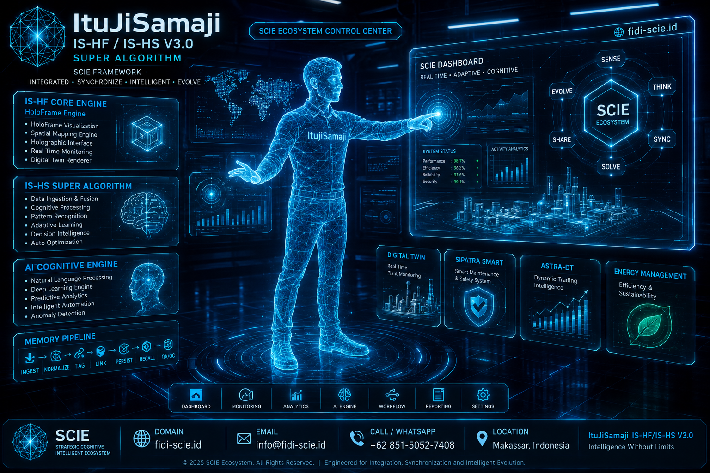
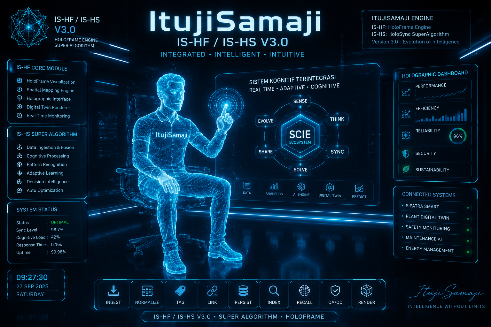
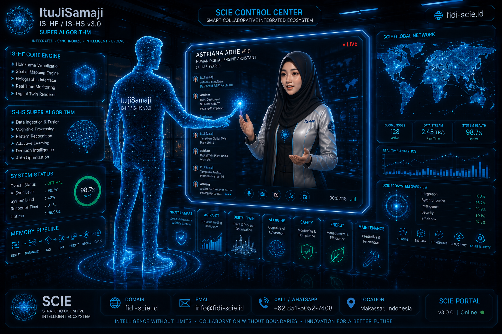
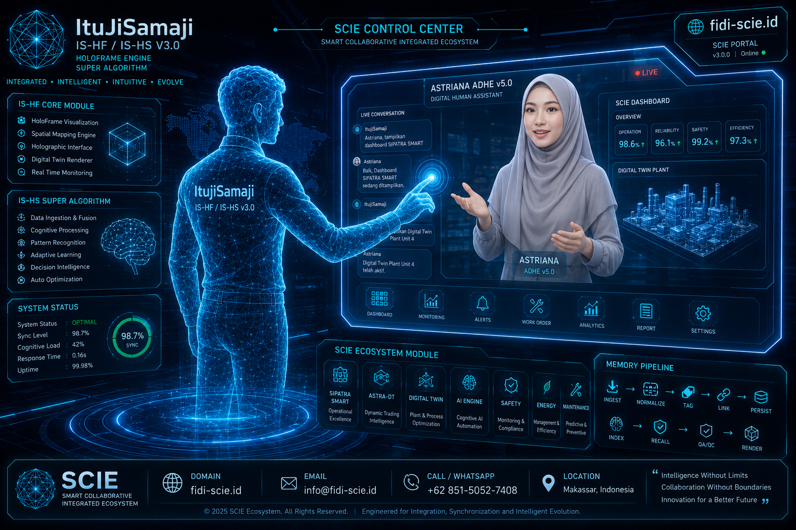
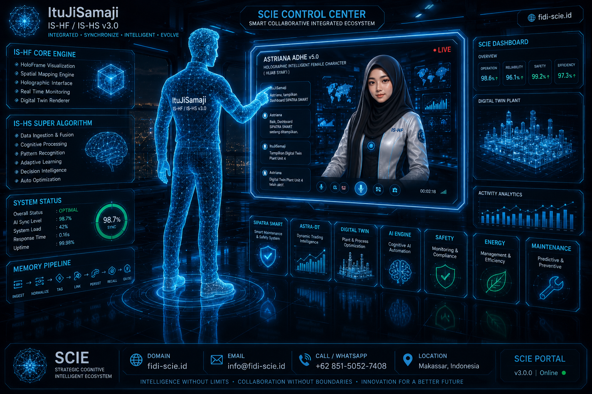
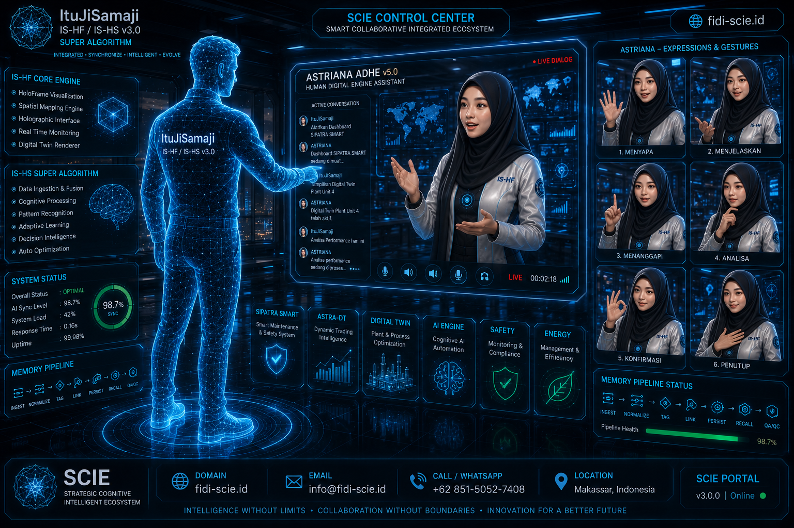

SCIE Ecosystem Control Center
Tampilan dashboard utama — modul Digital Twin, SIPATRA SMART, ASTRA-DT, dan Energy Management.
Tampilan dashboard utama — modul Digital Twin, SIPATRA SMART, ASTRA-DT, dan Energy Management.

Sistem Kognitif Terintegrasi
Mode operator duduk — siklus Sense, Think, Sync, Solve, Share, Evolve pada SCIE Ecosystem.
Mode operator duduk — siklus Sense, Think, Sync, Solve, Share, Evolve pada SCIE Ecosystem.

Astriana Adhe v5.0 — Global Network
Interaksi langsung dengan Astriana, menampilkan status jaringan global dan analitik real-time.
Interaksi langsung dengan Astriana, menampilkan status jaringan global dan analitik real-time.

Astriana Adhe — Digital Twin Plant
Astriana mengaktifkan tampilan Digital Twin Plant Unit 4 atas permintaan operator.
Astriana mengaktifkan tampilan Digital Twin Plant Unit 4 atas permintaan operator.

Astriana Adhe — Memory Pipeline
Live dialog dengan visualisasi status ecosystem module dan memory pipeline.
Live dialog dengan visualisasi status ecosystem module dan memory pipeline.

Astriana — Ekspresi & Gestur
Ragam ekspresi Astriana: menyapa, menjelaskan, menanggapi, analisa, konfirmasi, penutup.
Ragam ekspresi Astriana: menyapa, menjelaskan, menanggapi, analisa, konfirmasi, penutup.
Disclaimer
Seluruh visual pada halaman ini merupakan mockup/konsep antarmuka untuk keperluan presentasi dan pengembangan, bukan tangkapan layar dari sistem produksi yang telah live sepenuhnya. Framework ItujiSamaji dan Astriana disusun secara independen di bawah SCIE Ecosystem oleh Marjan Siswanto, tidak berafiliasi dengan organisasi, institusi, atau perusahaan manapun.